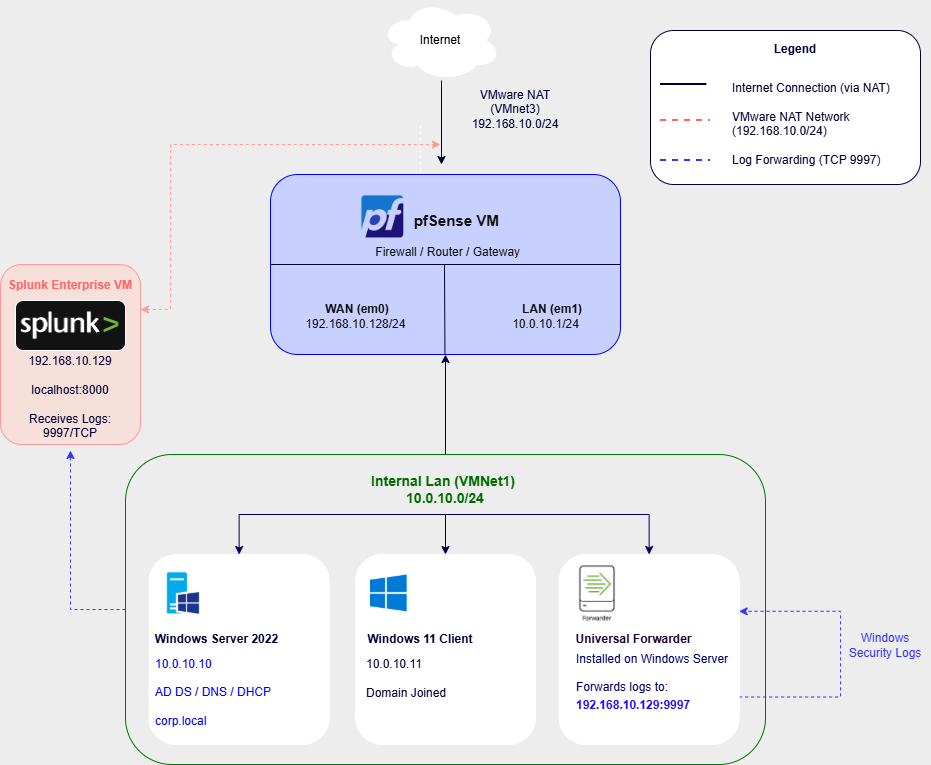
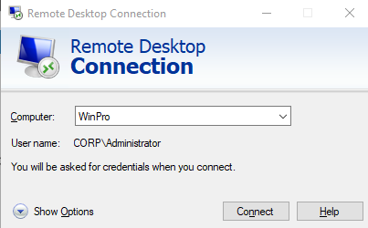
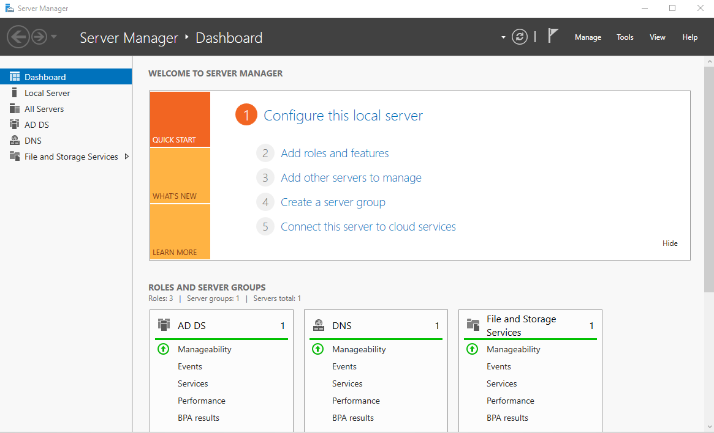
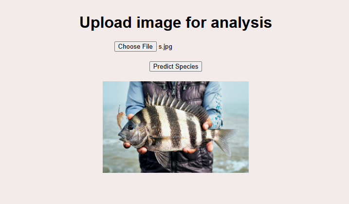
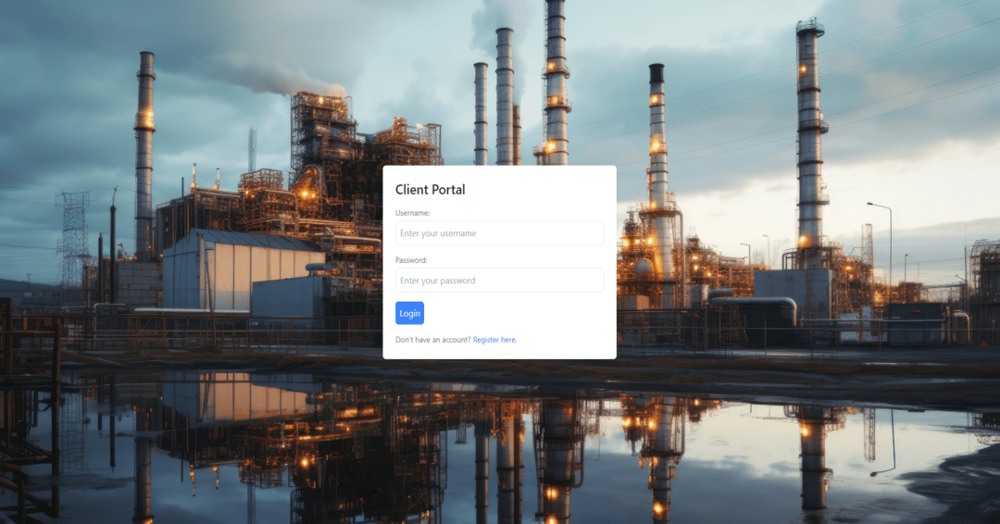
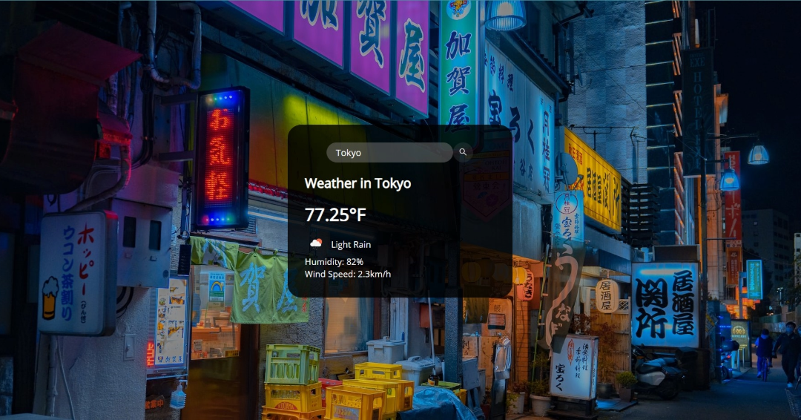
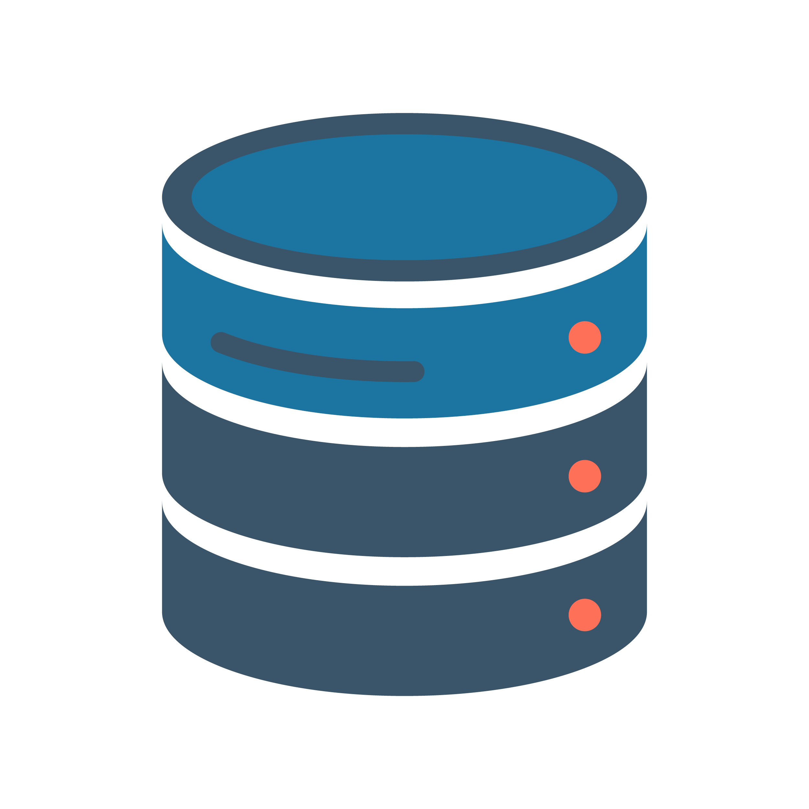

Portfolio
Personal Projects






For more information...
Timeline
A short summary of my experiences
October 2025
Ace Pay, Technical Support Representative
POS Systems • Payment Processing • SaaS Solutions • Technical Support
- Deployed and configured POS, payment terminal, and SaaS payment solutions for restaurant and retail merchants.
- Delivered remote and onsite technical support, system setup, and merchant training.
- Performed software testing, troubleshooting, and documentation to improve platform reliability.
- Partnered with sales and onboarding teams to implement custom payment integrations and merchant solutions.
October 2025
DownUnder GeoSolutions, IT Technician Contract
Linux Servers • HPC Infrastructure • Hardware Support
- Relocated 600+ Linux server nodes from oil-immersed cooling systems across data centers.
- Diagnosed and repaired CPU, power supply, and memory issues to support HPC reliability.
- Documented DDR4/DDR5 memory, fiber cabling, and networking equipment to maintain inventory accuracy.
June 2025 - August 2025
Remote IT Admin Assistant, Contractor
IT Support • Documentation • Project Coordination
- Resolved client support tickets, tracked escalations, and maintained timely issue resolution.
- Managed technical documentation and supported daily IT operations across help desk and infrastructure teams.
- Coordinated IT project tasks, vendor communications, timelines, and handoffs to support consistent service delivery.
August - December 2023
Electric Vehicle Adoption Analysis
Data Science • Machine Learning • Team Collaboration
- Analyzed electric vehicle adoption data to identify factors influencing EV availability and usage.
- Applied multiple linear regression and regression tree methods to evaluate key trends.
- Collaborated with a team to clean data, interpret results, and present project findings.

January - April 2024
Fuel Quote Application
Full-Stack Web Project • Team Collaboration
- Built a full-stack fuel quote app with HTML, JavaScript, Tailwind CSS, PHP, and PostgreSQL.
- Developed secure login and registration using password hashing, validation, and authentication workflows.
- Worked in an Agile/Scrum team using Git, unit testing, and frontend input validation.

June 2023 - August 2023
Mama La's, Helper/Intern
Equipment Maintenance • Troubleshooting • Operations Support
- Diagnosed production equipment issues and coordinated repairs to minimize downtime and maintain operational continuity.
- Applied structured troubleshooting methods to identify failures, communicate technical issues, and restore systems efficiently.
- Developed strong problem-solving and incident response skills in a fast-paced environment where equipment reliability directly impacted output.